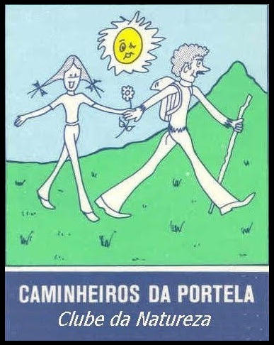

Lista de Caminhadas
| # | Data | Local | Responsável | Dias | Recursos |
|---|
Mensagem de informação...
O Visualizador de Caminhadas dos Caminheiros da Portela permite consultar, filtrar e explorar todo o arquivo histórico de caminhadas desde 1982.
Pode carregar o seu próprio ficheiro Excel (.xlsx) através do menu. A primeira aba (TAB) deve conter os dados e a 1ª linha de cabeçalho é ignorada. A ordem obrigatória das colunas é a seguinte:
Pode consultar ou descarregar um ficheiro de exemplo através do seguinte link:
Abrir Folha de Exemplo (Google Sheets)
| # | Data | Local | Responsável | Dias | Recursos |
|---|